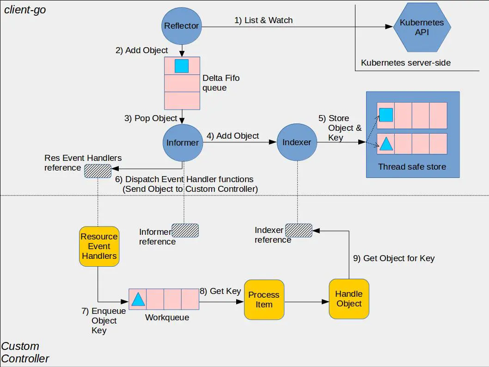
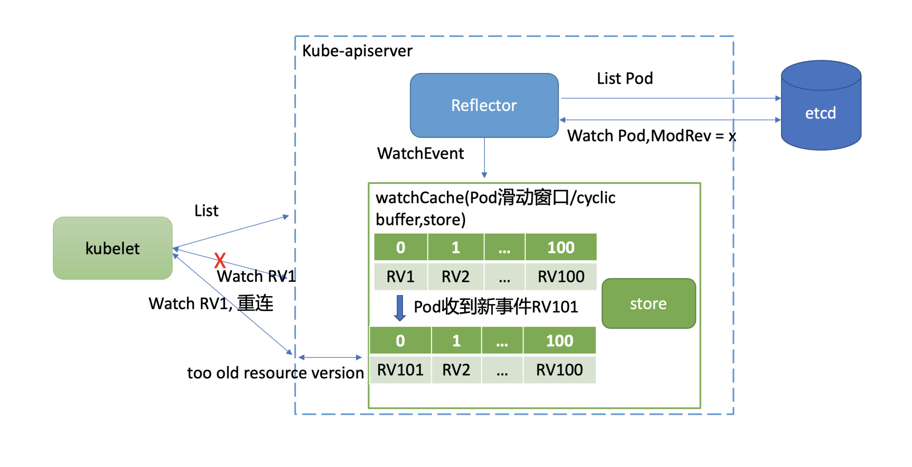
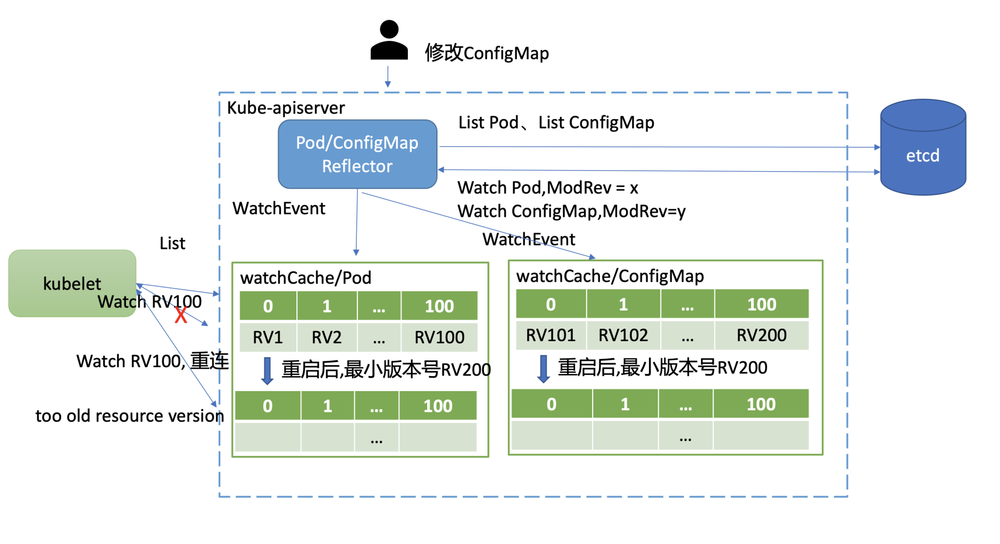

- 00 开篇词 为什么你要学习etcd_.md.html
- 01 etcd的前世今生：为什么Kubernetes使用etcd？.md.html
- 02 基础架构：etcd一个读请求是如何执行的？.md.html
- 03 基础架构：etcd一个写请求是如何执行的？.md.html
- 04 Raft协议：etcd如何实现高可用、数据强一致的？.md.html
- 05 鉴权：如何保护你的数据安全？.md.html
- 06 租约：如何检测你的客户端存活？.md.html
- 07 MVCC：如何实现多版本并发控制？.md.html
- 08 Watch：如何高效获取数据变化通知？.md.html
- 09 事务：如何安全地实现多key操作？.md.html
- 10 boltdb：如何持久化存储你的key-value数据？.md.html
- 11 压缩：如何回收旧版本数据？.md.html
- 12 一致性：为什么基于Raft实现的etcd还会出现数据不一致？.md.html
- 13 db大小：为什么etcd社区建议db大小不超过8G？.md.html
- 14 延时：为什么你的etcd请求会出现超时？.md.html
- 15 内存：为什么你的etcd内存占用那么高？.md.html
- 16 性能及稳定性（上）：如何优化及扩展etcd性能？.md.html
- 17 性能及稳定性（下）：如何优化及扩展etcd性能_.md.html
- 18 实战：如何基于Raft从0到1构建一个支持多存储引擎分布式KV服务？.md.html
- 19 Kubernetes基础应用：创建一个Pod背后etcd发生了什么？.md.html
- 20 Kubernetes高级应用：如何优化业务场景使etcd能支撑上万节点集群？.md.html
- 21 分布式锁：为什么基于etcd实现分布式锁比Redis锁更安全？.md.html
- 22 配置及服务发现：解析etcd在API Gateway开源项目中应用.md.html
- 23 选型：etcd_ZooKeeper_Consul等我们该如何选择？.md.html
- 24 运维：如何构建高可靠的etcd集群运维体系？.md.html
- 特别放送 成员变更：为什么集群看起来正常，移除节点却会失败呢？.md.html
- 结束语 搞懂etcd，掌握通往分布式存储系统之门的钥匙.md.html
- 捐赠
20 Kubernetes高级应用：如何优化业务场景使etcd能支撑上万节点集群？
你好，我是唐聪。
你知道吗？ 虽然Kubernetes社区官网文档目前声称支持最大集群节点数为5000，但是云厂商已经号称支持15000节点的Kubernetes集群了，那么为什么一个小小的etcd能支撑15000节点Kubernetes集群呢？
今天我就和你聊聊为了支撑15000节点，Kubernetes和etcd的做的一系列优化。我将重点和你分析Kubernetes针对etcd的瓶颈是如何从应用层采取一系列优化措施，去解决大规模集群场景中各个痛点。
当你遇到etcd性能瓶颈时，希望这节课介绍的大规模Kubernetes集群的最佳实践经验和优化技术，能让你获得启发，帮助你解决类似问题。
大集群核心问题分析
在大规模Kubernetes集群中会遇到哪些问题呢？
大规模Kubernetes集群的外在表现是节点数成千上万，资源对象数量高达几十万。本质是更频繁地查询、写入更大的资源对象。
首先是查询相关问题。在大集群中最重要的就是如何最大程度地减少expensive request。因为对几十万级别的对象数量来说，按标签、namespace查询Pod，获取所有Node等场景时，很容易造成etcd和kube-apiserver OOM和丢包，乃至雪崩等问题发生。
其次是写入相关问题。Kubernetes为了维持上万节点的心跳，会产生大量写请求。而按照我们基础篇介绍的etcd MVCC、boltdb、线性读等原理，etcd适用场景是读多写少，大量写请求可能会导致db size持续增长、写性能达到瓶颈被限速、影响读性能。
最后是大资源对象相关问题。etcd适合存储较小的key-value数据，etcd本身也做了一系列硬限制，比如key的value大小默认不能超过1.5MB。
本讲我就和你重点分析下Kubernetes是如何优化以上问题，以实现支撑上万节点的。以及我会简单和你讲下etcd针对Kubernetes场景做了哪些优化。
如何减少expensive request
首先是第一个问题，Kubernetes如何减少expensive request？
在这个问题中，我将Kubernetes解决此问题的方案拆分成几个核心点和你分析。
分页
首先List资源操作是个基本功能点。各个组件在启动的时候，都不可避免会产生List操作，从etcd获取集群资源数据，构建初始状态。因此优化的第一步就是要避免一次性读取数十万的资源操作。
解决方案是Kubernetes List接口支持分页特性。分页特性依赖底层存储支持，早期的etcd v2并未支持分页被饱受诟病，非常容易出现kube-apiserver大流量、高负载等问题。在etcd v3中，实现了指定返回Limit数量的范围查询，因此也赋能kube-apiserver 对外提供了分页能力。
如下所示，在List接口的ListOption结构体中，Limit和Continue参数就是为了实现分页特性而增加的。
Limit表示一次List请求最多查询的对象数量，一般为500。如果实际对象数量大于Limit，kube-apiserver则会更新ListMeta的Continue字段，client发起的下一个List请求带上这个字段就可获取下一批对象数量。直到kube-apiserver返回空的Continue值，就获取完成了整个对象结果集。
// ListOptions is the query options to a standard REST
list call.
type ListOptions struct {
...
Limit int64 `json:"limit,omitempty"
protobuf:"varint,7,opt,name=limit"`
Continue string `json:"continue,omitempty"
protobuf:"bytes,8,opt,name=continue"`
}
了解完kube-apiserver的分页特性后，我们接着往下看Continue字段具体含义，以及它是如何影响etcd查询结果的。
我们知道etcd分页是通过范围查询和Limit实现，ListOption中的Limit对应etcd查询接口中的Limit参数。你可以大胆猜测下，Continue字段是不是跟查询的范围起始key相关呢？
Continue字段的确包含查询范围的起始key，它本质上是个结构体，还包含APIVersion和ResourceVersion。你之所以看到的是一个奇怪字符串，那是因为kube-apiserver使用base64库对其进行了URL编码，下面是它的原始结构体。
type continueToken struct {
APIVersion string `json:"v"`
ResourceVersion int64 `json:"rv"`
StartKey string `json:"start"`
}
当kube-apiserver收到带Continue的分页查询时，解析Continue，获取StartKey、ResourceVersion，etcd查询Range接口指定startKey，增加clienv3.WithRange、clientv3.WithLimit、clientv3.WithRev即可。
当你通过分页多次查询Kubernetes资源对象，得到的最终结果集合与不带Limit查询结果是一致的吗？kube-apiserver是如何保证分页查询的一致性呢？ 这个问题我把它作为了思考题，我们一起讨论。
资源按namespace拆分
通过分页特性提供机制避免一次拉取大量资源对象后，接下来就是业务最佳实践上要避免同namespace存储大量资源，尽量将资源对象拆分到不同namespace下。
为什么拆分到不同namespace下有助于提升性能呢?
正如我在19中所介绍的，Kubernetes资源对象存储在etcd中的key前缀包含namespace，因此它相当于是个高效的索引字段。etcd treeIndex模块从B-tree中匹配前缀时，可快速过滤出符合条件的key-value数据。
Kubernetes社区承诺SLO达标的前提是，你在使用Kubernetes集群过程中必须合理配置集群和使用扩展特性，并遵循一系列条件限制（比如同namespace下的Service数量不超过5000个）。
Informer机制
各组件启动发起一轮List操作加载完初始状态数据后，就进入了控制器的一致性协调逻辑。在一致性协调逻辑中，在19讲Kubernetes 基础篇中，我和你介绍了Kubernetes使用的是Watch特性来获取数据变化通知，而不是List定时轮询，这也是减少List操作一大核心策略。
Kubernetes社区在client-go项目中提供了一个通用的Informer组件来负责client与kube-apiserver进行资源和事件同步，显著降低了开发者使用Kubernetes API、开发高性能Kubernetes扩展组件的复杂度。
Informer机制的Reflector封装了Watch、List操作，结合本地Cache、Indexer，实现了控制器加载完初始状态数据后，接下来的其他操作都只需要从本地缓存读取，极大降低了kube-apiserver和etcd的压力。
下面是Kubernetes社区给出的一个控制器使用Informer机制的架构图。黄色部分是控制器相关基础组件，蓝色部分是client-go的Informer机制的组件，它由Reflector、Queue、Informer、Indexer、Thread safe store(Local Cache)组成。

Informer机制的基本工作流程如下：
- client启动或与kube-apiserver出现连接中断再次Watch时，报”too old resource version”等错误后，通过Reflector组件的List操作，从kube-apiserver获取初始状态数据，随后通过Watch机制实时监听数据变化。
- 收到事件后添加到Delta FIFO队列，由Informer组件进行处理。
- Informer将delta FIFO队列中的事件转发给Indexer组件，Indexer组件将事件持久化存储在本地的缓存中。
- 控制器开发者可通过Informer组件注册Add、Update、Delete事件的回调函数。Informer组件收到事件后会回调业务函数，比如典型的控制器使用场景，一般是将各个事件添加到WorkQueue中，控制器的各个协调goroutine从队列取出消息，解析key，通过key从Informer机制维护的本地Cache中读取数据。
通过以上流程分析，你可以发现除了启动、连接中断等场景才会触发List操作，其他时候都是从本地Cache读取。
那连接中断等场景为什么触发client List操作呢？
Watch bookmark机制
要搞懂这个问题，你得了解kube-apiserver Watch特性的原理。
接下来我就和你介绍下Kubernetes的Watch特性。我们知道Kubernetes通过全局递增的Resource Version来实现增量数据同步逻辑，尽量避免连接中断等异常场景下client发起全量List同步操作。
那么在什么场景下会触发全量List同步操作呢？这就取决于client请求的Resource Version以及kube-apiserver中是否还保存了相关的历史版本数据。
在08Watch特性中，我和你提到实现历史版本数据存储两大核心机制，滑动窗口和MVCC。与etcd v3使用MVCC机制不一样的是，Kubernetes采用的是滑动窗口机制。
kube-apiserver的滑动窗口机制是如何实现的呢?
它通过为每个类型资源（Pod,Node等）维护一个cyclic buffer，来存储最近的一系列变更事件实现。
下面Kubernetes核心的watchCache结构体中的cache数组、startIndex、endIndex就是用来实现cyclic buffer的。滑动窗口中的第一个元素就是cache[startIndex%capacity]，最后一个元素则是cache[endIndex%capacity]。
// watchCache is a "sliding window" (with a limited capacity) of objects
// observed from a watch.
type watchCache struct {
sync.RWMutex
// Condition on which lists are waiting for the fresh enough
// resource version.
cond *sync.Cond
// Maximum size of history window.
capacity int
// upper bound of capacity since event cache has a dynamic size.
upperBoundCapacity int
// lower bound of capacity since event cache has a dynamic size.
lowerBoundCapacity int
// cache is used a cyclic buffer - its first element (with the smallest
// resourceVersion) is defined by startIndex, its last element is defined
// by endIndex (if cache is full it will be startIndex + capacity).
// Both startIndex and endIndex can be greater than buffer capacity -
// you should always apply modulo capacity to get an index in cache array.
cache []*watchCacheEvent
startIndex int
endIndex int
// store will effectively support LIST operation from the "end of cache
// history" i.e. from the moment just after the newest cached watched event.
// It is necessary to effectively allow clients to start watching at now.
// NOTE: We assume that <store> is thread-safe.
store cache.Indexer
// ResourceVersion up to which the watchCache is propagated.
resourceVersion uint64
}
下面我以Pod资源的历史事件滑动窗口为例，和你聊聊它在什么场景可能会触发client全量List同步操作。
如下图所示，kube-apiserver启动后，通过List机制，加载初始Pod状态数据，随后通过Watch机制监听最新Pod数据变化。当你不断对Pod资源进行增加、删除、修改后，携带新Resource Version（简称RV）的Pod事件就会不断被加入到cyclic buffer。假设cyclic buffer容量为100，RV1是最小的一个Watch事件的Resource Version，RV 100是最大的一个Watch事件的Resource Version。
当版本号为RV101的Pod事件到达时，RV1就会被淘汰，kube-apiserver维护的Pod最小版本号就变成了RV2。然而在Kubernetes集群中，不少组件都只关心cyclic buffer中与自己相关的事件。

比如图中的kubelet只关注运行在自己节点上的Pod，假设只有RV1是它关心的Pod事件版本号，在未实现Watch bookmark特性之前，其他RV2到RV101的事件是不会推送给它的，因此它内存中维护的Resource Version依然是RV1。
若此kubelet随后与kube-apiserver连接出现异常，它将使用版本号RV1发起Watch重连操作。但是kube-apsierver cyclic buffer中的Pod最小版本号已是RV2，因此会返回”too old resource version”错误给client，client只能发起List操作，在获取到最新版本号后，才能重新进入监听逻辑。
那么我们能否定时将最新的版本号推送给各个client来解决以上问题呢?
是的，这就是Kubernetes的Watch bookmark机制核心思想。即使队列中无client关注的更新事件，Informer机制的Reflector组件中Resource Version也需要更新。
Watch bookmark机制通过新增一个bookmark类型的事件来实现的。kube-apiserver会通过定时器将各类型资源最新的Resource Version推送给kubelet等client，在client与kube-apiserver网络异常重连等场景，大大降低了client重建Watch的开销，减少了relist expensive request。
更高效的Watch恢复机制
虽然Kubernetes社区通过Watch bookmark机制缓解了client与kube-apiserver重连等场景下可能导致的relist expensive request操作，然而在kube-apiserver重启、滚动更新时，它依然还是有可能导致大量的relist操作，这是为什么呢？ 如何进一步减少kube-apiserver重启场景下的List操作呢？
如下图所示，在kube-apiserver重启后，kubelet等client会立刻带上Resource Version发起重建Watch的请求。问题就在kube-apiserver重启后，watchCache中的cyclic buffer是空的，此时watchCache中的最小Resource Version(listResourceVersion)是etcd的最新全局版本号，也就是图中的RV200。

在不少场景下，client请求重建Watch的Resource Version是可能小于listResourceVersion的。
比如在上面的这个案例图中，集群内Pod稳定运行未发生变化，kubelet假设收到了最新的RV100事件。然而这个集群其他资源如ConfigMap，被管理员不断的修改，它就会导致导致etcd版本号新增，ConfigMap滑动窗口也会不断存储变更事件，从图中可以看到，它记录最大版本号为RV200。
因此kube-apiserver重启后，client请求重建Pod Watch的Resource Version是RV100，而Pod watchCache中的滑动窗口最小Resource Version是RV200。很显然，RV100不在Pod watchCache所维护的滑动窗口中，kube-apiserver就会返回”too old resource version”错误给client，client只能发起relist expensive request操作同步最新数据。
为了进一步降低kube-apiserver重启对client Watch中断的影响，Kubernetes在1.20版本中又进一步实现了更高效的Watch恢复机制。它通过etcd Watch机制的Notify特性，实现了将etcd最新的版本号定时推送给kube-apiserver。kube-apiserver在将其转换成ResourceVersion后，再通过bookmark机制推送给client，避免了kube-apiserver重启后client可能发起的List操作。
如何控制db size
分析完Kubernetes如何减少expensive request，我们再看看Kubernetes是如何控制db size的。
首先，我们知道Kubernetes的kubelet组件会每隔10秒上报一次心跳给kube-apiserver。
其次，Node资源对象因为包含若干个镜像、数据卷等信息，导致Node资源对象会较大，一次心跳消息可能高达15KB以上。
最后，etcd是基于COW(Copy-on-write)机制实现的MVCC数据库，每次修改都会产生新的key-value，若大量写入会导致db size持续增长。
早期Kubernetes集群由于以上原因，当节点数成千上万时，kubelet产生的大量写请求就较容易造成db大小达到配额，无法写入。
那么如何解决呢？
本质上还是Node资源对象大的问题。实际上我们需要更新的仅仅是Node资源对象的心跳状态，而在etcd中我们存储的是整个Node资源对象，并未将心跳状态拆分出来。
因此Kuberentes的解决方案就是将Node资源进行拆分，把心跳状态信息从Node对象中剥离出来，通过下面的Lease对象来描述它。
// Lease defines a lease concept.
type Lease struct {
metav1.TypeMeta `json:",inline"`
metav1.ObjectMeta `json:"metadata,omitempty" protobuf:"bytes,1,opt,name=metadata"`
Spec LeaseSpec `json:"spec,omitempty" protobuf:"bytes,2,opt,name=spec"`
}
// LeaseSpec is a specification of a Lease.
type LeaseSpec struct {
HolderIdentity *string `json:"holderIdentity,omitempty" protobuf:"bytes,1,opt,name=holderIdentity"`
LeaseDurationSeconds *int32 `json:"leaseDurationSeconds,omitempty" protobuf:"varint,2,opt,name=leaseDurationSeconds"`
AcquireTime *metav1.MicroTime `json:"acquireTime,omitempty" protobuf:"bytes,3,opt,name=acquireTime"`
RenewTime *metav1.MicroTime `json:"renewTime,omitempty" protobuf:"bytes,4,opt,name=renewTime"`
LeaseTransitions *int32 `json:"leaseTransitions,omitempty" protobuf:"varint,5,opt,name=leaseTransitions"`
}
因为Lease对象非常小，更新的代价远小于Node对象，所以这样显著降低了kube-apiserver的CPU开销、etcd db size，Kubernetes 1.14版本后已经默认启用Node心跳切换到Lease API。
如何优化key-value大小
最后，我们再看看Kubernetes是如何解决etcd key-value大小限制的。
在成千上万个节点的集群中，一个服务可能背后有上万个Pod。而服务对应的Endpoints资源含有大量的独立的endpoints信息，这会导致Endpoints资源大小达到etcd的value大小限制，etcd拒绝更新。
另外，kube-proxy等组件会实时监听Endpoints资源，一个endpoint变化就会产生较大的流量，导致kube-apiserver等组件流量超大、出现一系列性能瓶颈。
如何解决以上Endpoints资源过大的问题呢？
答案依然是拆分、化大为小。Kubernetes社区设计了EndpointSlice概念，每个EndpointSlice最大支持保存100个endpoints，成功解决了key-value过大、变更同步导致流量超大等一系列瓶颈。
etcd优化
Kubernetes社区在解决大集群的挑战的同时，etcd社区也在不断优化、新增特性，提升etcd在Kubernetes场景下的稳定性和性能。这里我简单列举两个，一个是etcd并发读特性，一个是Watch特性的Notify机制。
并发读特性
通过以上介绍的各种机制、策略，虽然Kubernetes能大大缓解expensive read request问题，但是它并不是从本质上来解决问题的。
为什么etcd无法支持大量的read expensive request呢？
除了我们一直强调的容易导致OOM、大流量导致丢包外，etcd根本性瓶颈是在etcd 3.4版本之前，expensive read request会长时间持有MVCC模块的buffer读锁RLock。而写请求执行完后，需升级锁至Lock，expensive request导致写事务阻塞在升级锁过程中，最终导致写请求超时。
为了解决此问题，etcd 3.4版本实现了并发读特性。核心解决方案是去掉了读写锁，每个读事务拥有一个buffer。在收到读请求创建读事务对象时，全量拷贝写事务维护的buffer到读事务buffer中。
通过并发读特性，显著降低了List Pod和CRD等expensive read request对写性能的影响，延时不再突增、抖动。
改善Watch Notify机制
为了配合Kubernetes社区实现更高效的Watch恢复机制，etcd改善了Watch Notify机制，早期Notify消息发送间隔是固定的10分钟。
在etcd 3.4.11版本中，新增了–experimental-watch-progress-notify-interval参数使Notify间隔时间可配置，最小支持为100ms，满足了Kubernetes业务场景的诉求。
最后，你要注意的是，默认通过clientv3 Watch API创建的watcher是不会开启此特性的。你需要创建Watcher的时候，设置clientv3.WithProgressNotify选项，这样etcd server就会定时发送提醒消息给client，消息中就会携带etcd当前最新的全局版本号。
小结
最后我们来小结下今天的内容。
首先我和你剖析了大集群核心问题，即expensive request、db size、key-value大小。
针对expensive request，我分别为你阐述了Kubernetes的分页机制、资源按namespace拆分部署策略、核心的Informer机制、优化client与kube-apiserver连接异常后的Watch恢复效率的bookmark机制、以及进一步优化kube-apiserver重建场景下Watch恢复效率的Notify机制。从这个问题优化思路中我们可以看到，优化无止境。从大方向到边界问题，Kubernetes社区一步步将expensive request降低到极致。
针对db size和key-value大小，Kubernetes社区的解决方案核心思想是拆分，通过Lease和EndpointSlice资源对象成功解决了大规模集群过程遇到db size和key-value瓶颈。
最后etcd社区也在努力提升、优化相关特性，etcd 3.4版本中的并发读特性和可配置化的Watch Notify间隔时间就是最典型的案例。自从etcd被redhat捐赠给CNCF后，etcd核心就围绕着Kubernetes社区展开工作，努力打造更快、更稳的etcd。
思考题
最后我给你留了两个思考题。
首先，在Kubernetes集群中，当你通过分页API分批多次查询得到全量Node资源的时候，它能保证Node全量数据的完整性、一致性（所有节点时间点一致）吗？如果能，是如何保证的呢?
其次，你在使用Kubernetes集群中是否有遇到一些稳定性、性能以及令你困惑的问题呢？欢迎留言和我一起讨论。
感谢你的阅读，如果你认为这节课的内容有收获，也欢迎把它分享给你的朋友，谢谢。
© 2019 - 2023 Liangliang Lee. Powered by gin and hexo-theme-book.